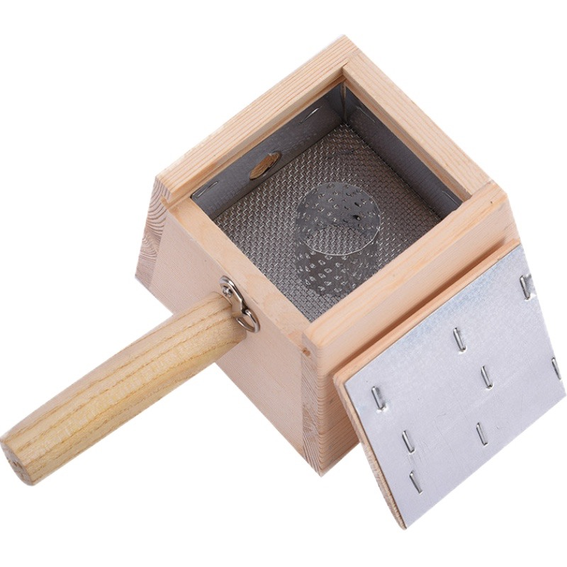

What is Moxibustion? A Complete Beginner's Guide

Moxibustion is an ancient Chinese therapy that involves burning dried mugwort (moxa) near the skin to stimulate acupuncture points. It's been used for over 2,000 years to treat various health conditions and promote overall wellness.
How Moxibustion Works
Moxibustion works by applying heat to specific points on the body. The heat penetrates deep into the tissues, warming the meridians and promoting the flow of qi (vital energy). This helps to:
- Improve blood circulation
- Relieve pain and inflammation
- Strengthen the immune system
- Balance the body's energy
Types of Moxibustion
- Direct Moxibustion: Moxa is placed directly on the skin and burned
- Indirect Moxibustion: Moxa is held above the skin or placed on a layer of ginger, garlic, or salt
- Moxa Stick: A rolled stick of moxa that is lit and held near the skin
Common Uses for Moxibustion
- Arthritis and joint pain
- Menstrual cramps
- Digestive issues
- Cold hands and feet
- Fertility issues
How to Use Moxibustion Safely
While moxibustion is generally safe when used correctly, it's important to follow these guidelines:
- Always use moxibustion in a well-ventilated area
- Keep a safe distance from the skin to avoid burns
- Never leave burning moxa unattended
- Consult a qualified practitioner if you're new to moxibustion
- Avoid moxibustion if you're pregnant or have certain medical conditions
Common Mistakes to Avoid
- Using too much heat or burning the skin
- Applying moxibustion to the wrong points
- Not properly extinguishing the moxa after use
- Using low-quality moxa
← Back to Blog